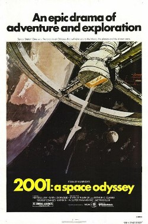
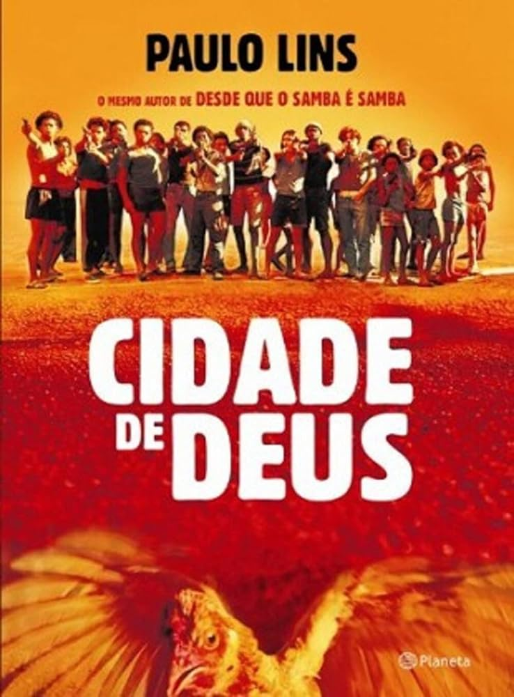
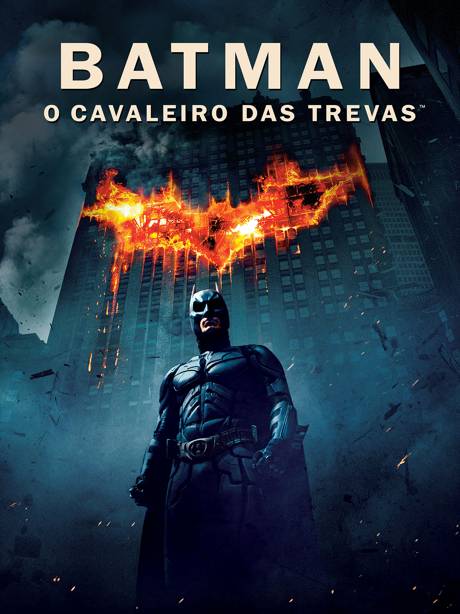
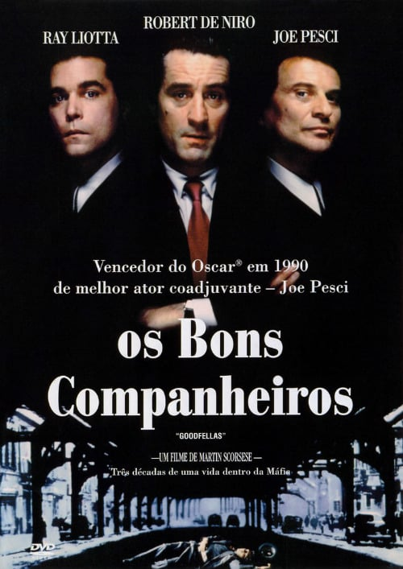
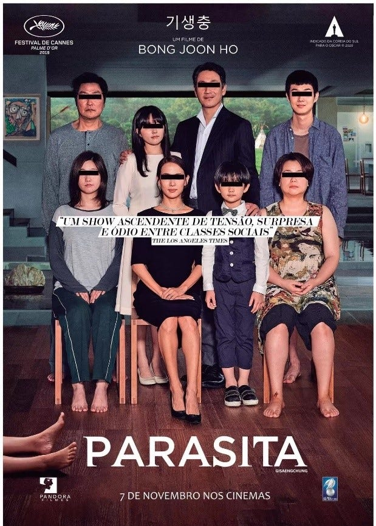
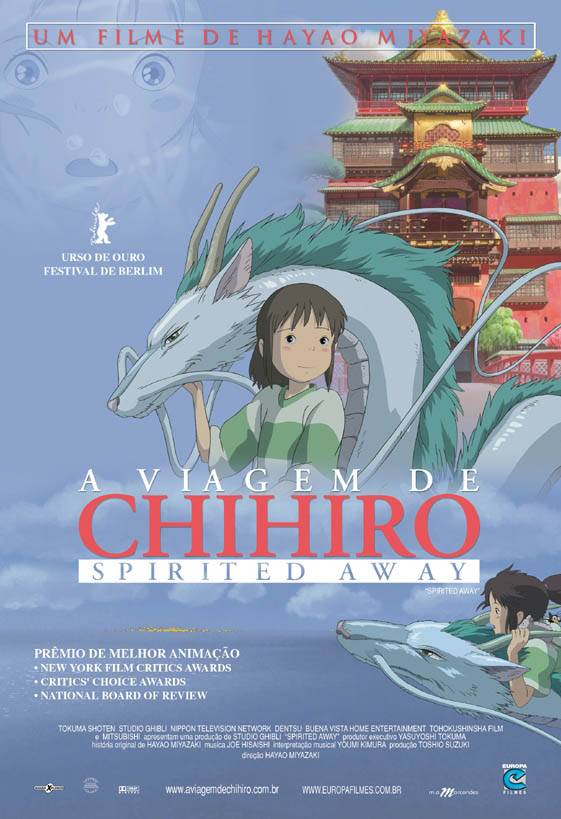

Sejam muito bem vindos senhoras e senhores!
Neste site vocês irão conhecer um pouco sobre alguns filmes que marcaram época e gerações, aproveitem!
2001: Uma Odisséia no espaço
Sinopse: Uma estrutura imponente preta fornece uma conexão entre o passado e o futuro nesta adaptação enigmática de um conto reverenciado de ficção científica do autor Arthur C. Clarke. Quando o Dr. Dave Bowman e outros astronautas são enviados para uma misteriosa missão, os chips de seus computadores começam a mostrar um comportamento estranho, levando a um tenso confronto entre homem e máquina que resulta em uma viagem alucinante no espaço e no tempo.
Diretor: Stanley Kubrick
Comentário pessoal: Eu pessoalmente sou um enorme fã do Kubrick, adoro a visão pesada e melancólica que ele possui de tudo. Em todos os seus filmes ele faz uma verdadeira demonstração de diversos problemas psicológicos dos seus personagens. Sobretudo em 2001, um amorzinho no meu coração, ele faz uso de materiais de uma forma que as pessoas da época jamais esperariam, contando apenas com efeitos práticos ele entrega um filme de 4 horas, sendo destas 30 minutos de diálogo apenas. Um filme deslumbrante, lindo e necessário, no entanto o final é muito difícil de entender, ele deixa bem nas entrelinhas o seu sentido mágico. Eu amo, muito, o Kubrick.
Cena do filme:

Cena comentada: A cena de abertura do filme mostra a espécie humana evoluindo, com a famosa cena de um osso sendo jogado para cima e cortando a cena para a nave espacial, representando a evolução da ciência e da tecnologia.
Cidade de Deus
Sinopse: Buscapé é um jovem pobre, negro e sensível, que cresce em um universo de muita violência. Ele vive na Cidade de Deus, favela carioca conhecida por ser um dos locais mais violentos do Rio. Amedrontado com a possibilidade de se tornar um bandido, Buscapé é salvo de seu destino por causa de seu talento como fotógrafo, o qual permite que siga carreira na profissão. É por meio de seu olhar atrás da câmera que ele analisa o dia a dia da favela em que vive, onde a violência aparenta ser infinita.
Diretor: Fernando Meirelles
Comentário pessoal: O único brasileiro desta lista, apesar disso não subjulga o seu peso. Ele é maravilhoso, possui uma fotografia totalmente incrível e uma ambientação que te move meio que forçado pelo avanço do tempo na evolução das favelas para o que a nós conhecemos.
Cena do filme:

Cena comentada: Na cena Buscapé e Andreia estão na praia, ele tenta conquistá-la e consegue, fazendo com que ela termine com o seu namorado. Porém, mais tarde o mesmo acontece com o personagem principal, com ela terminando com ele e iniciando um namoro com um amigo seu.
Batman: O cavaleiro das trevas
Sinopse: Batman tem conseguido manter a ordem em Gotham com a ajuda de Jim Gordon e Harvey Dent. No entanto, um jovem e anárquico criminoso, conhecido apenas como Coringa, pretende testar o Cavaleiro das Trevas e mergulhar a cidade em um verdadeiro caos.
Diretor: Christopher Nolan
Comentário pessoal: Assisti a este filme quando criança e vos digo: Jamais esqueci ou esquecerei do gênio Christopher Nolan, que em cada filme seu arrasa com tudo. Este filme é um dos meus favoritos de super-heróis, contém efeitos lindos, drama totalmente bem escrito e pensado e diverte até seu cachorro com as explosões, reviravoltas e mortes.
Cena do filme:

Cena comentada: Esta cena se passa em um baile de máscaras, cujo o único personagem que não usa uma é Bruce Wayne, demonstrando que o seu verdadeiro eu é o Batman e sua máscara é o milionário despreocupado.
Clube da Luta

Sinopse: Um homem deprimido que sofre de insônia conhece um estranho vendedor chamado Tyler Durden e se vê morando em uma casa suja depois que seu perfeito apartamento é destruído. A dupla forma um clube com regras rígidas onde homens lutam. A parceria perfeita é comprometida quando uma mulher, Marla, atrai a atenção de Tyler.
Diretor: David Fincher
Comentário pessoal: Antes de conhecer o filme, eu já conhecia o plot-twist (reviravolta), mas mesmo assim isso não estragou a arte, a mágica, o brilho, o sentimentalismo e a confusão que este filme causa nos telespectadores. O drama dá uma volta gigantesca para levá-lo a um ponto que você jamais esperaria.
Cena do filme:

Cena comentada: A primeira luta do futuro clube, aqui os protagonistas se enfrentam apenas porque estavam bêbados e quiseram tirar o peso da raiva que sentiam e de distrair de tudo.
Os bons companheiros
Sinopse: Um jovem cresce na máfia e trabalha arduamente para crescer entre seus companheiros. Ele gosta da vida de dinheiro e luxo, mas não liga para o horror que provoca. Infelizmente, a dependência de drogas e alguns erros finalmente destroem sua escalada até o topo. Baseado no livro Wiseguy por Nicholas Pileggi.
Diretor: Martin Scorcese
Comentário pessoal de Cauã 3°TI:
Os bons companheiros é possivelmente um dos melhores filmes de gangues já feito, trazendo um olhar
muito mais íntimo e um recorte específico de uma realidade que existiu de fato, assim como seja,
talvez, o melhor filme de Martin Scorcese, por trazer tanto de sua própria experiência de
vida(inclusive tendo a atuação de sua própria mãe no filme), quanto por reunir praticamente todos os
elementos marcantes de sua direção, com uma força gigantesca.
(Vou dar uma roubada e fazer menções honrosas, perdão)
Uma das cenas mais comentadas e preferidas de muitos é a que o personagem do Robert De Niro mostra
um aspecto específico dele que ainda não havia sido mostrado na tela, ele se revela um estrategista
frio e impiedoso(e tem Layla do Eric Clapton na trilha sonora), é lá pro meio do filme já, se eu
falar mais é spoiler. Outra menção honrosa é a cena de apresentação dos personagens, logo no início
do filme, com a narração como só o Scorcese sabe fazer, pra mim ela é genial.
Última menção honrosa, prometo. Tem uma cena que se passa na prisão e os personagens estão
preparando o jantar, é até bem cômico pra falar a verdade, mas eu acho maravilhosa.
Cena do filme:

Cena comentada: Agora a cena que mais me marcou e que eu considero a melhor(pelo menos no momento) é na verdade toda a sequência da morte de um personagem(Billy Batts), essa é a cena que abre o filme e é retomada e contextualizada posteriormente. Essa cena reúne todos os grandes elementos do filme, estabelece os principais aspectos dos personagens centrais e tem muitas sacadas geniais.
Parasita
Sinopse: Toda a família de Ki-taek está desempregada, vivendo em um porão sujo e apertado. Por obra do acaso, ele começa a dar aulas de inglês para uma garota de família rica. Fascinados com a vida luxuosa destas pessoas, pai, mãe e filhos bolam um plano para se infiltrar também na abastada família, um a um. No entanto, os segredos e mentiras necessários à ascensão social cobram o seu preço.
Diretor: Bong Joon-ho
Comentário pessoal: Adorei o filme. Ele não é uma obra completamente perfeita, mas chega muito próximo disso. Apresenta a sociedade neoliberal e o mundo como uma guerra constante de ascensões, o que mais impacta e apresenta sobre o estilo da obra. Muito gratificante e até mesmo assustadora(principalmente o final).
Cena do filme:

Cena comentada: O caçula da família rica(Da-song) sente um cheiro estranho no pai e na mãe da família "parasita" e diz ser o mesmo. Metaforicamente essa cena demonstra ele reconhecendo os trabalhadores da casa como pobres e sendo da mesma classe social. Sendo que este mesmo ponto vai ser retomado cada vez mais até o fim do filme.
Poderoso Chefão 2

Sinopse: Depois da máfia matar sua família, o jovem Vito foge da sua cidade na Sicília e vai para os Estados Unidos. Lá, ele assassina Black Hand Fanucci, que exigia dos comerciantes uma parte dos seus ganhos. Com a morte de Fanucci, o poder de Vito cresce, mas sua família é o que mais importa para ele. Morando agora no Lago Tahoe, Michael planeja fazer incursões em Las Vegas e Havana com negócios ligados ao lazer, mas descobre que aliados como Hyman Roth estão tentando matá-lo.
Diretor: Francis Ford Copolla
Comentário pessoal: Na minha opinião, o melhor drama, os melhores efeitos, as mais tristes mortes(BUAAAAAAAAAA). Para quem acompanhou o primeiro(e é obrigado para entender a maioria deste) vai passar muito nervoso junto ao Michael e as discussões que vão envolver a nova parte da família Corleone, Copolla adaptou muito bem esta parte da obra.
Cena do filme:

Cena comentada: Quem diria que Michael, o que disse que não ia fazer parte dos negócios da família, acabaria sendo o novo chefe dela. Nesta cena ele se lembra dos irmãos enquanto senta-se sozinho a mesa, percebendo que perdeu todos que amava.
Pulp Fiction

Sinopse: Assassino que trabalha para a máfia se apaixona pela esposa de seu chefe quando é convidado a acompanhá-la, um boxeador descumpre sua promessa de perder uma luta e um casal tenta um assalto que rapidamente sai do controle.
Diretor: Quentin Tarantino
Comentário pessoal: Como que coloca três histórias conflituosas, emocionantes, enlaçadas, profundas e bem elaboradas em um filme de pouco mais de duas horas e meia? Por isso Tarantino é um extraordinário diretor e roteirista, daqueles que revisa seus textos todos os dias com um golinho de cerveja e muita comédia misturada ao drama. Não posso dizer nada, mas posso soltar que é pesado, crítico, cômico, violento, amoroso e tenebroso. Eu amo Tarantino.
Cena do filme:

Cena comentada: Bruce Willis empunhando uma katana, tinha que ser o Tarantino. Esta cena possui algo mais pesado por tocar em um elemento bem sensível da sociedade, um estupro, mas de um homem por outro homem. O desfecho da cena acaba com um "herói machão" empunhando uma arma que remete a força e segurança.
O Fantástico Senhor Raposo

Sinopse: Após 12 anos de felicidade bucólica, o Sr. Raposo descumpre a promessa que fez à esposa e invade as fazendas dos vizinhos Boggis, Bunce e Bean. Ceder aos seus instintos animais coloca em perigo não somente o seu casamento, mas também a vida de sua família e seus amigos. Quando os fazendeiros montam uma armadilha para o Sr. Raposo, ele tem que confiar na sua astúcia natural para vencer o oponente.
Diretor: Wes Anderson
Comentário pessoal: Sabe aqueles filmes que não se espera nada, mas se recebe tudo? Este filme é absurdo. Feito em "stop motion"(vários bonecos de massa articulados, se tira uma foto de cada movimento e monta um filme colocando uma foto em sequência da outra) pelo lendário Wes Anderson. O filme é muito cômico, perfeito para assistir com a família, curto e possui muitas quebras de quarta parede. O final entrega uma filosofia mesclada com o amor de família e guerra.
Cena do filme:

Cena comentada: "Acenem para o lobo". Aqui Senhor Raposo voltando de um crime, visualiza um lobo(um animal que ele acha lindo mas possui medo) e ao invés de se assustar, inveja a vida livre que ele tem e demonstra o que ele gostaria verdadeiramente de ser.
Três homens em conflito

Sinopse: Nos Estados Unidos, durante a Guerra de Secessão, um pistoleiro misterioso tenta trabalhar em conjunto com um bandido e um caçador de recompensas para encontrar um tesouro escondido. Os homens são obrigados a forjar uma difícil aliança visto que cada um conhece apenas uma parte da localização da fortuna. O problema é que nenhum deles tem a intenção de dividir a riqueza.
Diretor: Sergio Leone
Comentário pessoal: Sabe aqueles filmes bang-bang(velho oeste americano) que interessa os tiros, a mocinha, o drama histórico e o fantástico Clint Eastwood, aqui você acha de tudo. É o último da franquia Por um punhado de dólares e possui aquela clássica música assobiada de filmes do gênero.
Cena do filme:

Cena comentada: O deserto, onde o "mau" tortura o "bom" deixando ele caminhando sem água pelo deserto e quase o matando. O único motivo de não matá-lo é porque ele acaba descobrindo o local do tesouro que procuram até o fim do filme.
Um extra:
A viagem de Chihiro
Sinopse: Chihiro e seus pais estão se mudando para uma cidade diferente. A caminho da nova casa, o pai decide pegar um atalho. Eles se deparam com uma mesa repleta de comida, embora ninguém esteja por perto. Chihiro sente o perigo, mas seus pais começam a comer. Quando anoitece, eles se transformam em porcos. Agora, apenas Chihiro pode salvá-los.
Diretor: Hayao Miyazaki
Comentário pessoal de Sofia 3ºTI: O primeiro contato com anime que eu tive, muito legal ver o crescimento da personagem. O início parece que ela está excluída e estranha por causa da mudança de cidade, ela internaliza os eventos. Depois da casa de banho, na onde os pais são transformados em porcos, ela parece se sentir confiante, com a certeza do que quer.
Cena do filme:

Cena comentada: No trem indo para a casa da irmã, ao lado do sem rosto, as pessoas saem do trem, a cena faz parecer que ela amadureceu, que ela está diferente.